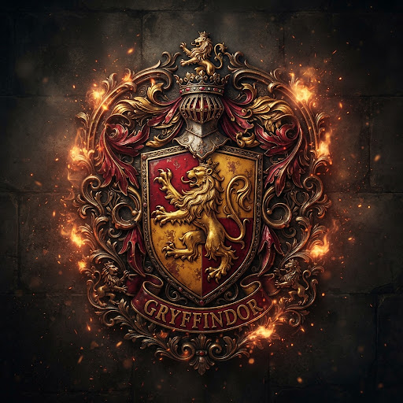
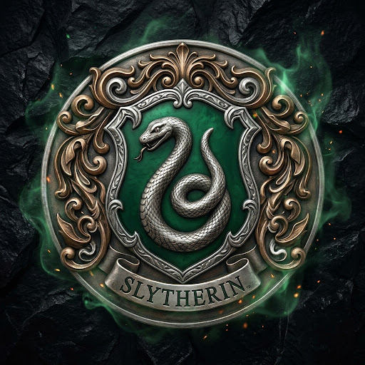
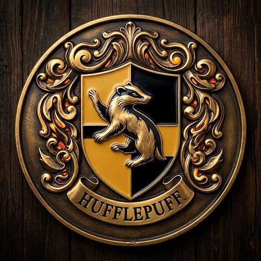
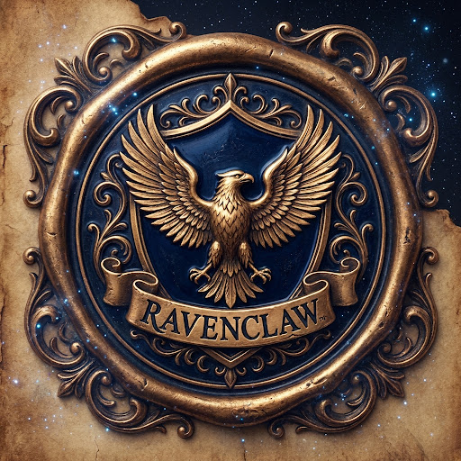

FIRE ELEMENT
NICK (GHOST)
School of witchcraft and wizardry
THE QUADRUMVIRATE OF ANTIQUITY
For over a millennium, these four sanctuaries have fostered magical prowess, sacred lineage, and distinct virtues. Weigh your essence against their eternal creeds before taking your seat beneath the ancient Sorting Hat.

HOUSE OF GOLD & SCARLET
Forti Animo Estote
FIRE ELEMENT
NICK (GHOST)
Godric Gryffindor , wild-dueling master duelist and wielder of the ruby-pommelled Goblin-forged blade.
Gryffindor Tower atop the seventh floor, guarded by the Fat Lady portrait with crackling hearth fires and deep velvet armchairs.
Albus Dumbledore, Harry Potter, Minerva McGonagall, Hermione Granger.
Where dwell the brave at heart, their daring, nerve, and chivalry set Gryffindors apart.

HOUSE OF EMERALD & SILVER
Ad Astra Per Aspera
WATER ELEMENT
BARON (GHOST)
Salazar Slytherin , master of Legilimency, Parseltongue speaker, and architect of the deepest hidden vaults.
Subterranean Dungeon catacombs beneath the Black Lake, glowing with emerald lanterns and carved skull sconces.
Severus Snape, Merlin, Regulus Black, Horace Slughorn, Draco Malfoy, Tom Marvolo Riddle.
Or yet in Slytherin you'll make your real friends, those cunning folk use any means to achieve their ends.

HOUSE OF OCHRE & CHARCOAL
Omnia Vincit Patientia
EARTH ELEMENT
FRIAR (GHOST)
Helga Hufflepuff , culinary conjurer, herbalist extraordinaire, and the champion of equal magical embrace.
Earthy burrow basement by the Great Kitchens, entered by tapping “Helga Hufflepuff” rhythm upon vinegar barrels.
Newt Scamander, Cedric Diggory, Nymphadora Tonks, Pomona Sprout.
Where they are just and loyal, those patient Hufflepuffs are true, and unafraid of toil.

HOUSE OF SAPPHIRE & BRONZE
Sapientia Sine Fine
AIR ELEMENT
GREY LADY (GHOST)
Rowena Ravenclaw , brilliant spellcraft innovator and crafter of the Diadem granting boundless intelligence.
Ravenclaw High Turret, offering sweeping views of the mountains, accessed only by answering the Eagle Door Knocker's riddle.
Luna Lovegood, Filius Flitwick, Garrick Ollivander, Cho Chang, Sybill Trelawney.
Where those of wit and learning, will always find their kind. Wit beyond measure is man's greatest treasure.
Hogwarts Sorting Logic • System Telemetry v9.4